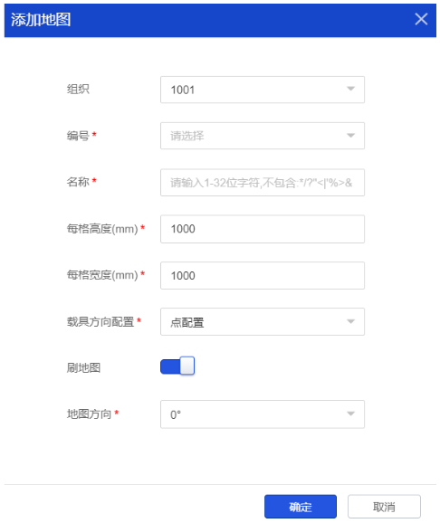
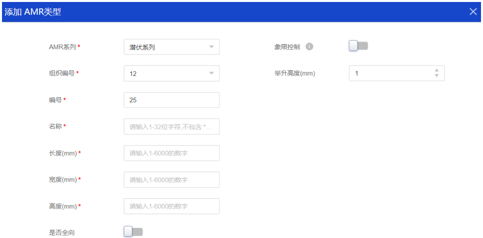
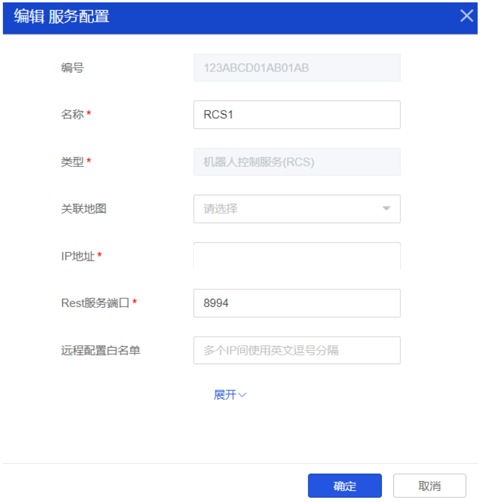
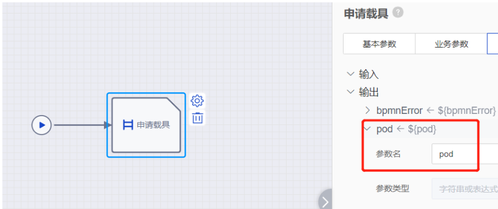
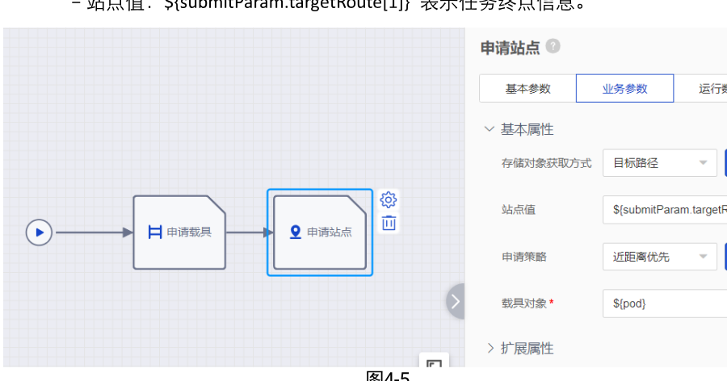
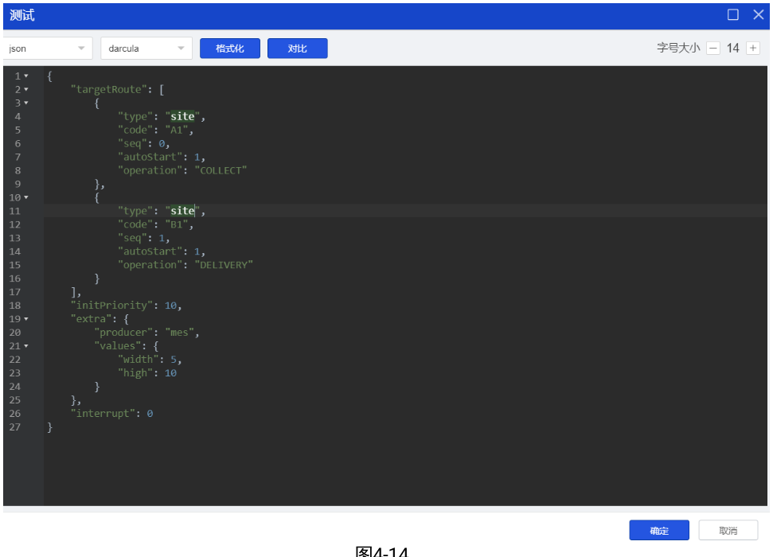

潜伏机器人平台搭建与任务配置
潜伏车跑不起来，多半卡在地图未关联、货架没绑定载具这类强依赖环节。从 rcs-web 登录到任务下发，七段链路每一步填什么参数、设备注册端口 8988 怎么核对，都写清了。
实施部署目录
面向 RCS 平台配潜伏机器人的首次与扩容部署，内容来自 V4.1 内部部署手册，页面中的端口、坐标均为示例，实际请以交付版本与现场实测为准。
适用场景与登录准备
本篇适用于 RCS 平台 + 潜伏机器人（顶升/举升）的首次部署与扩容部署，覆盖地图配置、载具配置、机器人配置、任务编排与下发。整条链路的顺序不能颠倒：先有地图，才有站点与库区；先有地图关联，服务才能下发；先有载具绑定，任务才不会报错。
- 浏览器使用 IE10 / IE11 或 Chrome，地址栏输入
http://服务器IP:端口/rcs，rcs-web 默认端口为8182。 - 首次登录需先上传 license 授权文件（授权文件需提前走流程申请）。
- 用户名
admin，初始密码见交付文档，首次登录后按提示修改。
登录后主界面左侧为「搭建模型 / 任务编排 / 控制调度 / 运营管理 / 系统设置」等菜单，后续操作都从这几处进入。
阶段一 · 添加地图
进入「搭建模型 → 地图配置 → 地图列表」，单击右上角「＋」新增地图，四个参数决定后续能否正常跑车：
| 参数 | 取值要求 | 判断依据 |
|---|---|---|
| 编号 | 与现场地码中间两位字母一致 | 无对应选项时，到「系统设置 → 系统配置 → 数据字典 → 地图 → 地码类型」先添加 |
| 地图类型 | 拓扑地图 | 潜伏车按地码网格运行，必须选拓扑地图 |
| 每格高度 | 相邻整数码两点 Y 轴方向实际距离（mm） | 与现场卷尺实测值一致，误差会直接体现为走位偏移 |
| 每格宽度 | 相邻整数码两点 X 轴方向实际距离（mm） | 同上；与机器人端二维码间距参数必须一致 |
保存后，进入「搭建模型 → 服务配置」，点 RCS 服务的「编辑」，在关联地图中勾选刚建好的地图。

地图编号与地码类型不匹配，机器人上线后会「识别到码但不在正确站点」；每格宽/高填反或单位按 cm 填写，会导致整张地图比例错误。
阶段一 · 地图编辑与解析
4.0 平台的地图编辑在 MapStudio 客户端完成，不是在浏览器里画。
- 「地图配置 → 地图列表」选中地图，点「地图编辑」，会拉起本机
MapStudio.exe。 - 在基础元素列表选「高速区」，在地图界面单击落点；若元素不显示，到「地图配置 → 地图元素」把「是否展示」改为展示。
- 点「漫游」，双击点元素打开「点属性信息」，在相对坐标中填与地码一致的数值，保存。
- 点「画线」，按下鼠标从一个点拖到另一个点生成有向线（无特殊情况只允许水平 / 垂直）。
- 点「漫游」双击线元素，配置线属性（速度、方向、是否允许停车等）。
- 全部点线配完后点「保存」，地图自动同步到 rcs-web；再点「地图解析」，只有解析成功才会生成站点数据。
- 到「搭建模型 → 存储对象 → 站点管理」核对站点编号、区域编号，站点名称可在此改成现场叫法（如「A 区上料位」）。
判断依据：站点管理里能看到完整的站点列表，且数量与地图点位一致，说明解析成功。
阶段一 · 划分库区
库区用于按区域分派任务、限制机器人活动范围。
- 在 MapStudio 中单击「库区编辑」。
- 点「＋」，输入区域编号与区域名称，确认。
- 点「框选」，在地图上拖出范围，被选中的区域会标记对应区域序号。
只有储位、产线缓冲区、工作台等元素类型可以被框选为库区；把高速区、充电桩框进去不会生效。
阶段一 · 添加设备（AMR 类型 + AMR）
必须先建类型、再建机器人。进入「搭建模型 → AMR 配置 → AMR 类型」，点「添加」：
- 编号：自定义，不可重复；
- 名称：可用铭牌型号，也可自定义；
- 尺寸：长、宽、旋转直径按铭牌填写；
- 是否全向：前后左右都能走才选「全向」，否则选否；
- 举升高度：托盘举起后增加的高度，一般为 60 mm。
再进入「AMR 配置 → AMR 添加」新增机器人：编号即机器人 ID（看机身标识），名称不可与已有 AGV 冲突，类型与实际设备一致，导航方式按现场选择（二维码 / 激光 / 混合）。

阶段一 · 配置服务（IP 与数据库）
进入「搭建模型 → 服务配置」，逐项编辑：
- AMS 服务 → 编辑 → 把 IP 地址改为服务器 IP。
- RCS 服务 → 编辑，配置以下参数：
- 关联地图：勾选本 RCS 管理的地图；
- IP 地址：RCS / AMS 所在服务器 IP；
- 数据库 URL：
服务器IP:2345； - 其余参数无特殊情况保持默认（含设备注册端口 8988，机器人端平台参数必须与此一致）。
- 点「保存并配置」一步生效；若只点了「保存」，需回到服务列表勾选服务再点「远程配置」，直到提示「远程配置成功」。

单机环境 IP 填服务器 IP；双机 rose 环境要填分配出去的虚拟 IP，填成某台实机 IP 会导致主备切换后失联。IP 以现场实际为准，本篇不写具体地址。
阶段一 · 配置货架与载具
按「仓位 → 货架结构 → 载具类型 → 货架」的顺序配：
- 「存储对象 → 仓位类型管理」，按实际仓位尺寸添加仓位类型。
- 「搬运对象 → 货架结构管理」添加货架参数：
- 长 / 宽：若长宽相等，线属性里的货架方向设置会失效；需要用线属性控制方向时，长宽要差 1 mm 以上；
- 是否盲举：货架未贴货码选「是」；
- 可旋转 AGV 类型、短边进 AGV 类型：按允许进入 / 旋转的车型勾选。
- 点「下一步」选择对应仓位类型。
- 「搬运对象 → 载具类型管理」添加载具类型。
- 「搬运对象 → 货架管理」添加货架，货架编号必须与实物货码一致。
- 「存储对象 → 仓位管理」核对所有仓位是否已生成。
区分两个概念：搬运对象是可移动载具（潜伏货架、叉车托盘、CTU 料箱）；存储对象是固定存储架（高位货架，多用于叉车 / CTU）。
阶段二 · 机器人配置（有实车 / 无实车）
有实车：用调试线或 WiFi 连接机器人。调试线方式下电脑 IP 需与机器人固定 IP 192.168.1.64 同网段（示例地址，以现场实际为准）。运行 车端调试工具 添加机器人（账号 admin，密码见交付文档），登录后按「快速配置」逐项配置：
| 配置项 | 要求 |
|---|---|
| 工作模式 | 正常模式 |
| WiFi 参数 | 频段、安全模式与现场网络一致，SSID 与密钥按实际填 |
| 平台参数 | RCS 服务 IP + 设备注册端口（默认 8988，需与 rcs-web 服务配置一致） |
| 二维码参数 | 间距 = 现场实际贴码距离，且与建图时的地码间距一致 |
| 地码类型 | 按实际打印的地码类型选择 |
把机器人推到地码上，进入 车端调试工具「状态信息 → 定位导航信息 → 二维码信息」，二维码码值显示为实际码值即代表识别成功，这是上线的前提。
无实车：打开模拟器目录下的 config.xml，配置 step_0（每格宽）、step_1（每格高）、code_type（地码类型）、服务器 ip / port，以及 robot_num、robot_id、pos_x / pos_y；再运行 simulate_agv，客户端即显示在线，可用于第三方接口联调。
阶段二 · 客户端登录与上线
- 在 rcs-web 首页下载
MonitorClient_Setup.exe，默认方式安装。 - 运行监控客户端，输入用户名、密码（与 rcs-web 相同）、IP 地址与端口（与访问 rcs-web 一致，客户端默认端口 38182）。
- 有实车时把车推到地码上并确认已识别；无实车时启动模拟器。
- 进入「监控」页，机器人显示在线即上线成功。
- 验证运动：右侧列表双击一台机器人，再在地图上单击目标点作为终点，点「移动」下发移动任务，观察是否按路径行驶。
若一直离线，按「网络通 → 设备注册端口一致 → 地码已识别」三步倒查。
阶段三 · 任务编排（点到点搬运）
进入「任务编排 → 任务流程列表」，点「＋」新建，流程编号与名称自定义，类型选「任务流程」（子流程用于被嵌套）。默认举升搬运流程编号为 PF-LMR-COMMON。以点到点搬运为例，节点顺序为：
- 开始：流程符，标记入口。
- 申请载具：输出 pod 对象，确定要搬的载具与起点。默认参数不用改：
获取方式值 = ${submitParam.targetRoute[0]}（起点），目标站点值 = ${submitParam.targetRoute[1]}（终点），申请策略按场景选。 - 申请站点：输出 site 对象，站点值
${submitParam.targetRoute[1]}，确定终点。 - 查找车型：输出 amrType 对象，按载具匹配可执行车型，参数默认。
- 搬运任务：AMR 动作节点，起点终点取自前面的资源节点，参数默认。
- 结束：流程符，点「完成」保存。


${submitParam.targetRoute[1]}，即任务终点；申请策略决定多车抢同一站点时的排队方式。阶段三 · 任务下发与过程管理
方式一：接口下发（测试用）。在「任务编排」选中流程点「测试」，编辑 targetRoute：type 填 site（站点）或 zone（区域），code 填站点名称或区域编号，确定后即调用一次接口。

targetRoute 数组第一个元素为起点、第二个为终点，type 区分站点与区域。方式二：任务调度下发。进入「控制调度 → 任务调度 → 生成任务」，填任务类型（即流程编号）、优先级（1~120，越大越优先）、类型（区域 / 站点 / 仓位 / 载具编号）与值；传几个途经点就添加几条类型。
过程管理：「运营管理 → 任务管理 → 任务链管理」查看任务状态与取消；「子任务单管理」可取消或重新执行已取消的子任务。
任务下发前起点必须已绑定载具（「控制调度 → 任务调度 → 载具与站点绑定」，选绑定类型后执行），否则会直接报「申请不到载具」。
收尾：第三方通讯与验收
第三方对接：「系统设置 → 系统配置 → 应用注册」点「＋」，填服务编号 / 名称、应用类型（MES / WCS / WMS）、协议（http / https）、域名或 IP、相对 URL（基础路径）、连接超时（约 3000 ms）与接收超时（约 30000 ms）；可配置多个第三方。
任务通知：编辑任务流程，选中「搬运任务」节点 → 业务参数 → 扩展属性，启用「是否通知业务系统」，编辑通知信息，启用「任务开始通知」，选应用名称并填方法名与通知路径。
验收口径：地图解析成功、站点数量正确；机器人在线并能执行单点移动；任务流程用接口测试跑通一次完整搬运；任务链里状态从「执行中」走到「完成」。以上全部通过，本次部署即可交付。
- 本篇 IP / 端口（8182、38182、8988、2345）均为手册默认值，现场改过端口的以实际为准。
- 任何参数改动后，优先确认「远程配置成功」，再复测一次任务。
上线前核对
- rcs-web 可登录，license 已上传，admin 初始密码已修改
- 地图编号与现场地码类型一致，每格宽 / 高按实测 mm 填写且未填反
- 地图已在 MapStudio 完成点位、连线并「地图解析」成功，站点管理可见完整站点
- 库区只框选了储位、产线缓冲区、工作台等允许的元素类型
- AMR 类型的尺寸、是否全向、举升高度与铭牌一致，且先建类型后建机器人
- RCS 服务已勾选关联地图，IP 与数据库 URL 正确；双机环境使用的是虚拟 IP
- 服务配置已提示「远程配置成功」，设备注册端口与机器人端平台参数一致
- 货架编号与实物货码一致，载具类型 / 货架结构 / 仓位类型均已配置
- 机器人已识别地码（二维码码值正确）并在客户端显示在线，可执行单点移动
- 任务流程节点顺序正确，targetRoute 起点终点传参正确，接口测试跑通
- 起点已绑定载具，「生成任务」能正常下发并走到完成
- 应用注册与任务开始通知（如需对接第三方）已配置并验证回调